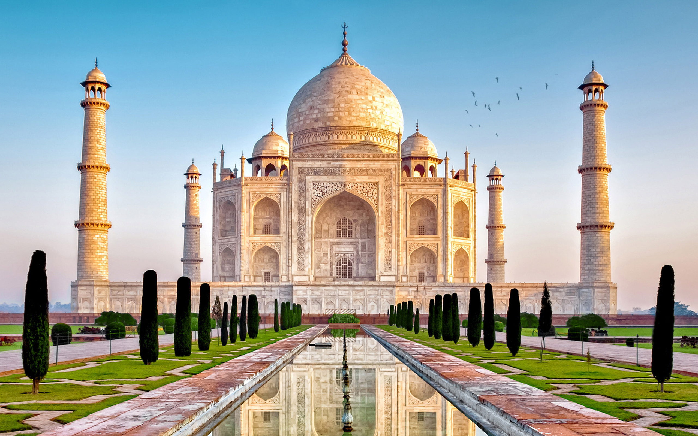

Taj Mahal: Agra, India
Description:

The Taj Mahal in India was built by a grief-stricken emperor Shah Jahan. His wife Mumtaz Mahal died in 1631 while giving birth to their 14th child. Construction of the Taj Mahal began one year later and it was built to be the final resting place of Mumtaz Mahal. Different types of marble from all over the world were used to build this mausoleum. Today, millions of people come from all over the world to visit this famous and beautifully designed Islamic tomb in Agra, a city in northern India.
Know more about Taj Mahal▼
- Mumtaz Mahal was Shah Jahan's third wife. Her name was originally Arjumand Bano Begum but when she married Shah Jahan she was christened as Mumtaz Mahal which means ‘Jewel of the Palace', or ‘Chosen One of the Palace'.
- Taj Mahal means ‘crown of places'.
- The Taj Mahal took approximately 20 years and approximately 20,000 workers to complete. There were also about 1000 elephants used to transport the materials needed for construction.
- The Taj Mahal complex also has additional mausoleums, a mosque, a reflecting pool and large garden to add to its beauty.
- The Taj Mahal stands at 561 feet tall.
- The material used to build the Taj Mahal is white marble. The marble used in construction was brought from many different countries.
- The color of Taj Mahal appears to change color depending on the time of day. The color change also depends on whether there is moonlight at night.
- There were about 28 different types of precious and semi-precious stones inlaid into the burial tomb of the Taj Mahal. During the Indian Rebellion in 1857, many of the precious stones were stripped from the walls of the tomb.
- Over 200,000 tourists from overseas and as many as 2 to 4 million people visit the Taj Mahal every year.
- The four pillars around the main dome were built to slant away from the dome slightly. This was done to help protect the tomb if the pillars ever collapsed.
- The cost to build the Taj Mahal was about 35 million rupees, which would be about 1 million American dollars. In 1632 that would be an enormous amount of money to spend on a mausoleum.
- It was rumored that Shah Jahan had the hands cut off from the people who worked on the Taj Mahal once it was complete. His reasoning was that nobody would ever be able to build such a beautiful building ever again. Nobody has been able to prove that this story is true.
- Although the Taj Mahal was built for Mumtaz Mahal, Shah Jahan was also laid to rest in the tomb alongside his late wife.